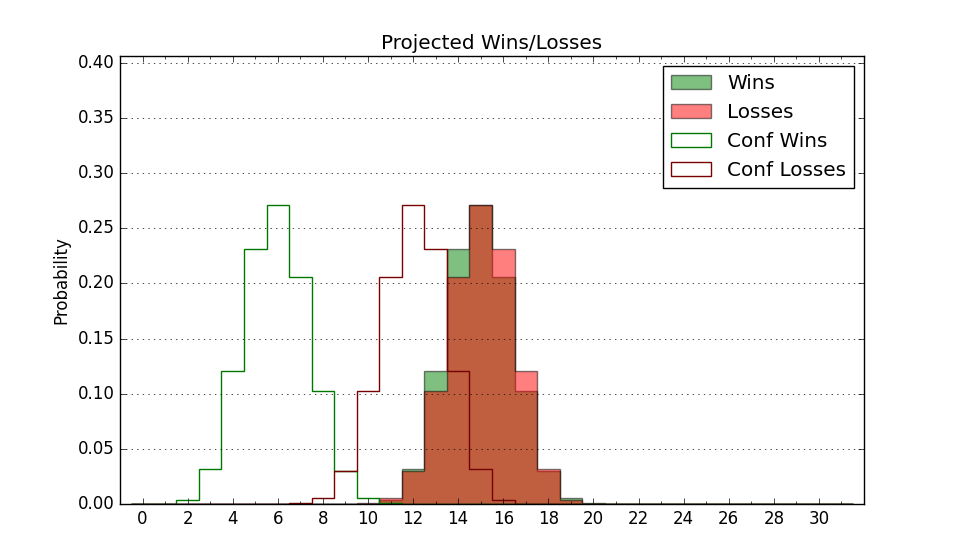

| Home | Game Probabilities | Conferences | Preseason Predictions | Odds Charts | NCAA Tournament |
| City: | Houston, Texas | |
| Conference: | American (11th)
| |
| Record: | 2-6 (Conf) 11-9 (Overall) | |
| Ratings: | Comp.: -1.6 (181st) Net: -1.6 (182nd) Off: 102.8 (219th) Def: 104.4 (143rd) SoR: 0.0 (151st) |
| Remaining | ||||||
|---|---|---|---|---|---|---|
| Date | Opponent | Win Prob | Pred. | |||
| 2/2 | Memphis (43) | 19.2% | L 67-77 | |||
| 2/5 | @ East Carolina (170) | 33.0% | L 65-69 | |||
| 2/8 | @ Charlotte (250) | 50.7% | W 68-67 | |||
| 2/11 | North Texas (49) | 21.7% | L 59-66 | |||
| 2/15 | @ Tulane (140) | 27.1% | L 66-73 | |||
| 2/19 | UAB (130) | 53.3% | W 76-75 | |||
| 2/22 | Tulsa (275) | 82.3% | W 73-63 | |||
| 2/26 | @ Memphis (43) | 6.5% | L 63-81 | |||
| 3/2 | @ UTSA (211) | 40.9% | L 73-76 | |||
| 3/6 | Wichita St. (155) | 58.4% | W 73-70 | |||
| Previous | Game Score | |||||
| Date | Opponent | Win Prob | Result | Off | Def | Net |
| 11/5 | FIU (245) | 77.3% | W 77-70 | -3.2 | -0.1 | -3.4 |
| 11/9 | (N) Florida St. (66) | 17.3% | L 65-73 | -4.6 | 9.8 | 5.2 |
| 11/12 | Louisiana Monroe (337) | 90.6% | W 66-50 | -14.5 | 17.6 | 3.0 |
| 11/16 | Northwestern St. (231) | 75.4% | W 77-75 | 1.2 | -8.8 | -7.5 |
| 11/19 | @Louisiana Lafayette (341) | 75.0% | W 83-61 | 21.0 | 9.4 | 30.3 |
| 11/22 | @Houston Baptist (257) | 52.8% | W 61-58 | -1.2 | 10.0 | 8.7 |
| 11/29 | (N) Hofstra (174) | 49.0% | L 63-68 | -11.4 | 5.2 | -6.1 |
| 11/30 | (N) Arkansas St. (96) | 28.2% | W 75-67 | 7.9 | 17.2 | 25.1 |
| 12/1 | (N) Iona (300) | 76.1% | W 70-66 | -1.4 | -2.9 | -4.3 |
| 12/8 | @Texas St. (163) | 31.8% | L 66-75 | 8.6 | -12.4 | -3.8 |
| 12/16 | Alcorn St. (338) | 90.6% | W 77-75 | -6.4 | -13.5 | -19.9 |
| 12/22 | Prairie View A&M (329) | 89.6% | W 64-46 | -9.4 | 20.4 | 11.1 |
| 1/1 | @Tulsa (275) | 57.7% | W 70-64 | 5.5 | 1.8 | 7.3 |
| 1/4 | Charlotte (250) | 77.8% | W 68-55 | 7.9 | 1.8 | 9.7 |
| 1/8 | @North Texas (49) | 7.5% | L 59-81 | 7.6 | -29.8 | -22.2 |
| 1/11 | Temple (124) | 52.3% | L 70-73 | -10.0 | 0.4 | -9.6 |
| 1/14 | UTSA (211) | 70.2% | L 84-90 | 5.8 | -21.6 | -15.8 |
| 1/19 | @Florida Atlantic (108) | 21.2% | L 73-75 | 14.9 | -2.3 | 12.6 |
| 1/25 | Tulane (140) | 55.8% | L 71-82 | -0.5 | -17.3 | -17.8 |
| 1/28 | @South Florida (180) | 35.1% | L 64-69 | -13.3 | 8.8 | -4.5 |
| Stats & Trends | |||||
|---|---|---|---|---|---|
| Current | Day | Week | Month | Season | |
| Composite | -1.6 | -0.3 | -0.8 | -2.3 | -0.4 |
| Comp Rank | 181 | -3 | -11 | -33 | -20 |
| Net Efficiency | -1.6 | -0.3 | -0.8 | -2.8 | -- |
| Net Rank | 182 | -2 | -13 | -31 | -- |
| Off Efficiency | 102.8 | -0.8 | -0.7 | +2.5 | -- |
| Off Rank | 219 | -14 | -13 | +32 | -- |
| Def Efficiency | 104.4 | +0.5 | -0.1 | -5.3 | -- |
| Def Rank | 143 | +12 | +4 | -60 | -- |
| SoS Rank | 292 | +12 | +26 | +65 | -- |
| Exp. Wins | 14.9 | -0.4 | -1.2 | -2.9 | -0.2 |
| Exp. Conf Wins | 5.9 | -0.4 | -1.2 | -2.9 | -1.7 |
| Conf Champ Prob | 0.0 | -- | -0.0 | -1.0 | -2.7 |

| Advanced Stats | ||
|---|---|---|
| Stat | Value | Rank |
| Off Eff FG % | 0.476 | 275 |
| Off Ast Ratio | 0.127 | 285 |
| Off ORB% | 0.316 | 109 |
| Off TO Rate | 0.157 | 236 |
| Off FT Ratio | 0.419 | 28 |
| Def Eff FG % | 0.479 | 91 |
| Def Ast Ratio | 0.123 | 43 |
| Def ORB% | 0.279 | 157 |
| Def TO Rate | 0.129 | 309 |
| Def FT Ratio | 0.357 | 240 |